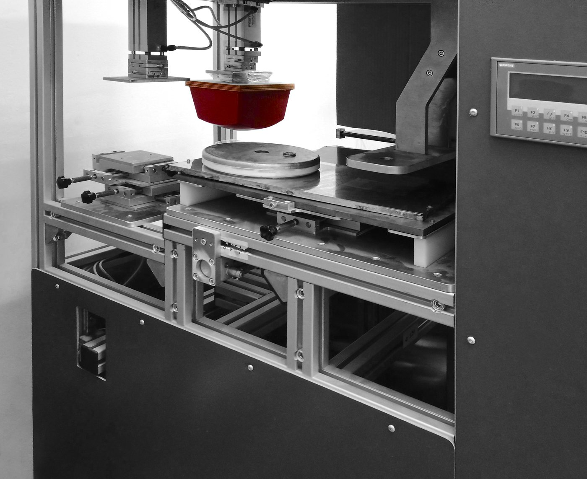

<!doctype html>
<html lang="uk">
<head>
<meta charset="utf-8">
<meta name="viewport" content="width=device-width, initial-scale=1">
<title>Корпоративна культура — НІК-ЕЛЕКТРОНІКА</title>
<meta name="description" content="Інноваційність, якість, довіра та ефективність: як працює команда з понад 600 людей, що створює прилади обліку енергоресурсів.">
<meta name="robots" content="noindex">
<link rel="preconnect" href="https://fonts.googleapis.com">
<link rel="preconnect" href="https://fonts.gstatic.com" crossorigin="">
<link href="https://fonts.googleapis.com/css2?family=JetBrains+Mono:wght@400;500;600&amp;display=swap" rel="stylesheet">
<link rel="stylesheet" href="style.css">

<script src="https://cdn.jsdelivr.net/npm/morphdom@2.7.4/dist/morphdom-umd.min.js"></script>
<script src="runtime.js"></script>
<script src="shell.js"></script>
</head>
<body>
<div id="app"></div>
<script type="text/x-template" id="tpl">
<shell-top></shell-top>
<main id="main">
<section class="phead">
  <div class="wrap">
    <nav aria-label="Навігаційний ланцюжок"><ol class="crumbs"><li><a href="index.html">Головна</a></li><li><a href="about.html">Про нас</a></li><li><a href="career.html">Кар’єра</a></li><li><span aria-current="page">Корпоративна культура</span></li></ol></nav>
    <h1>Корпоративна культура</h1>
    <p class="lead">У нашій команді понад 600 людей: інженери, програмісти, конструктори, технологи, виробничі фахівці, маркетологи та інші. Деякі працівники з нами понад 10&nbsp;років.</p>
    <p class="lead">Ми цінуємо інженерну точність і відповідальність за результат, а кожен працівник бачить, які результати приносить його робота.</p>
    <nav class="tabs" aria-label="Розділ «Про нас»"><a href="about.html">Про компанію</a><a href="history.html">Історія</a><a href="career.html" aria-current="page">Кар’єра</a><a href="conformity.html">Центр оцінки відповідності</a><a href="partners.html">Партнери</a><a href="cases.html">Кейси та об’єкти</a></nav>
  </div>
</section>

<section class="sec">
  <div class="wrap">
    <div class="shead"><div><h2 class="h2">Як ми на практиці реалізуємо наші цінності</h2></div></div>
    <div class="ngrid pair">
      <article class="service"><i><svg width="20" height="20" viewBox="0 0 24 24" fill="none" stroke="currentColor" stroke-width="2" stroke-linecap="round" stroke-linejoin="round" aria-hidden="true"><path d="M13 2 4 14h7l-1 8 9-12h-7z"></path></svg></i><h3>Інноваційність</h3><ul class="feat"><li><span>Пропонуємо покращення, навіть якщо це не входить у наші задачі</span></li><li><span>Шукаємо, як зробити швидше, простіше й дешевше</span></li><li><span>Не боїмося тестувати нові підходи</span></li></ul></article>
      <article class="service"><i><svg width="20" height="20" viewBox="0 0 24 24" fill="none" stroke="currentColor" stroke-width="2" stroke-linecap="round" stroke-linejoin="round" aria-hidden="true"><path d="M12 3l2.6 5.6 6 .7-4.5 4.1 1.2 6L12 16.6 6.7 19.4l1.2-6L3.4 9.3l6-.7z"></path></svg></i><h3>Якість</h3><ul class="feat"><li><span>Перевіряємо свою роботу, перш ніж передати її далі</span></li><li><span>Дотримуємося стандартів і не «спрощуємо», якщо це шкодить результату</span></li><li><span>Думаємо про кінцевого користувача та клієнта</span></li></ul></article>
      <article class="service"><i><svg width="20" height="20" viewBox="0 0 24 24" fill="none" stroke="currentColor" stroke-width="2" stroke-linecap="round" stroke-linejoin="round" aria-hidden="true"><path d="M12 3l8 3v6c0 5-3.5 8-8 9-4.5-1-8-4-8-9V6z"></path></svg></i><h3>Довіра</h3><ul class="feat"><li><span>Виконуємо обіцянки або заздалегідь попереджаємо про ризики</span></li><li><span>Говоримо прямо, не приховуючи проблем</span></li><li><span>Беремо відповідальність за свій результат</span></li></ul></article>
      <article class="service"><i><svg width="20" height="20" viewBox="0 0 24 24" fill="none" stroke="currentColor" stroke-width="2" stroke-linecap="round" stroke-linejoin="round" aria-hidden="true"><path d="M4 17l6-6 4 4 6-8"></path></svg></i><h3>Ефективність</h3><ul class="feat"><li><span>Фокусуємося на результаті, а не на процесі</span></li><li><span>Вміємо розставляти пріоритети</span></li><li><span>Пропонуємо рішення, а не лише вказуємо на проблеми</span></li></ul></article>
    </div>
  </div>
</section>

<section class="sec on-paper">
  <div class="wrap text-rows">
    <div class="about-cols"><h2 class="h2">Хто досягає успіху в NIK</h2><div class="art"><p>Люди, які:</p><ul class="feat"><li><span>швидко беруть відповідальність;</span></li><li><span>не бояться ставити питання;</span></li><li><span>орієнтуються на результат, а не на процес;</span></li><li><span>дотримуються домовленостей;</span></li><li><span>проявляють ініціативу;</span></li><li><span>поділяють цінності компанії.</span></li></ul></div></div>
  </div>
</section>

<section class="sec">
  <div class="wrap">
    <div class="shead"><div><h2 class="h2">Фото команди</h2></div></div>
    <div class="mosaic">
      <figure></figure>
      <figure></figure>
      <figure></figure>
      <figure></figure>
      <figure></figure>
    </div>
    <div class="hbtns"><a href="vacancies.html" class="btn btn-red">Відкриті вакансії<svg width="18" height="18" viewBox="0 0 24 24" fill="none" stroke="currentColor" stroke-width="2.2" stroke-linecap="round" stroke-linejoin="round" aria-hidden="true"><path d="M5 12h14M13 6l6 6-6 6"></path></svg></a></div>
  </div>
</section>
</main>
<shell-bottom></shell-bottom>
</script>
<script>
window.DC_BLOBS = {};
class Component extends DCLogic {
  constructor(props) {
    super(props);
    this.state = { cookie: true, menu: false };
  }
  renderVals() {
    return this.base(this.state);
  }
}

DC.mount(Component);
</script>
</body>
</html>
